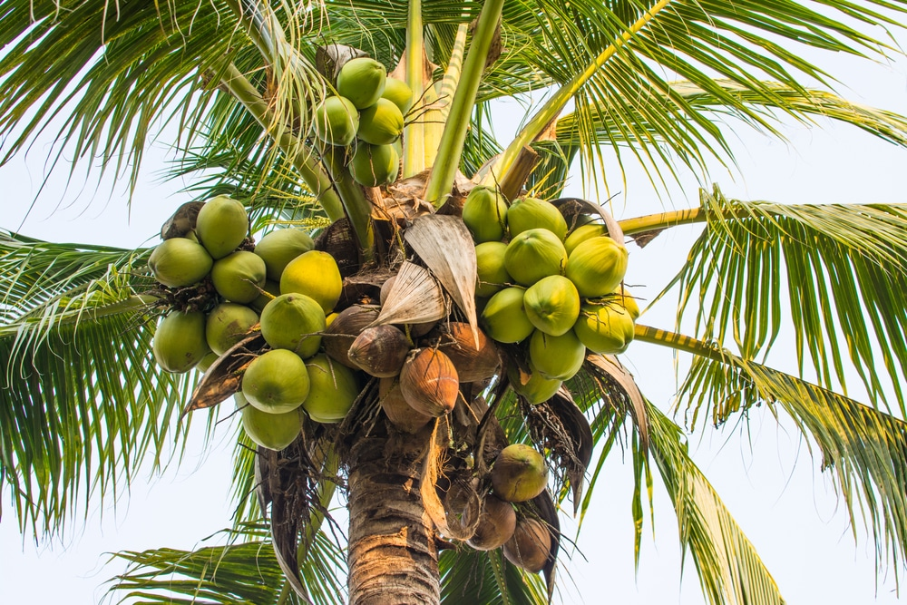
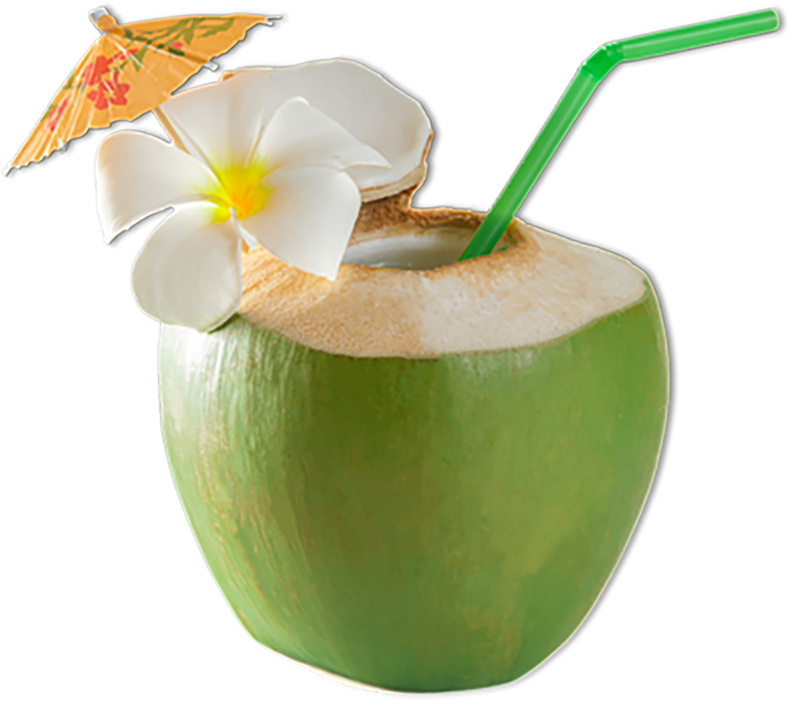

Kookospähkinä on kookospalmun hedelmä.
Kasvitieteellisesti se on rakenteeltaan luumarja.
Kookosta käytetään hyvin laajasti, kuidusta valmistetaan
narua ja mattoja, sisällöstä tehdään monenlaisia
elintarvikkeita, sekä kookosöljyä, jota myös käytetään
laajasti.